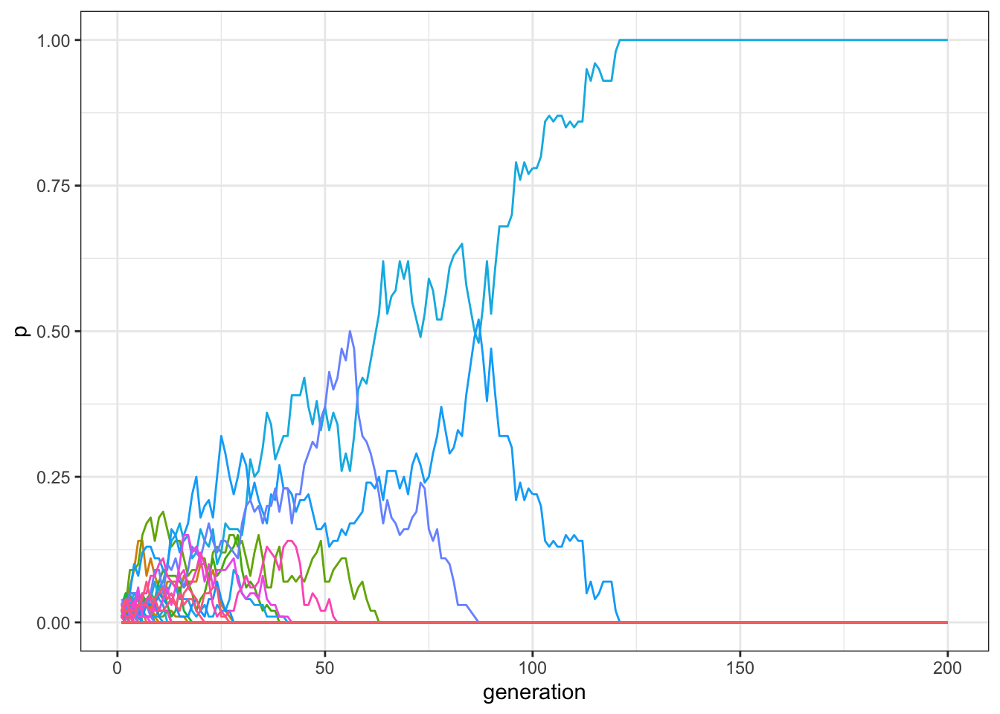
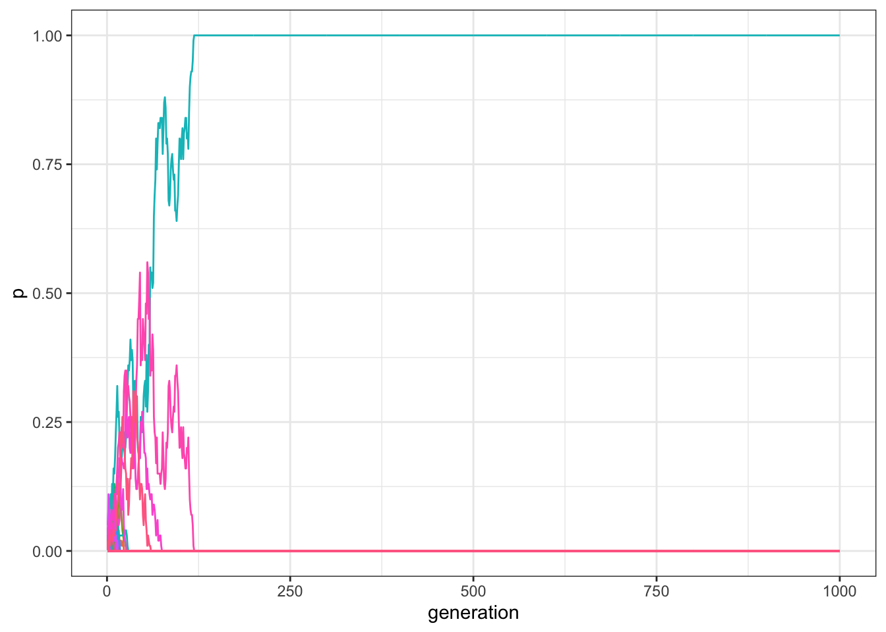
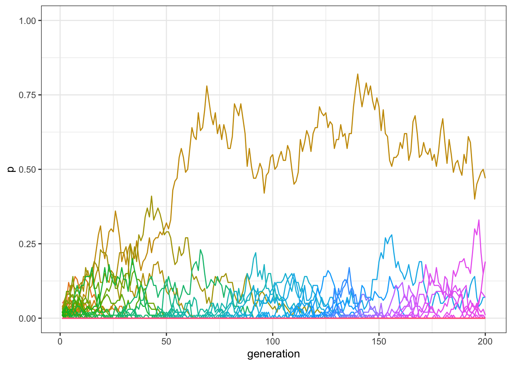
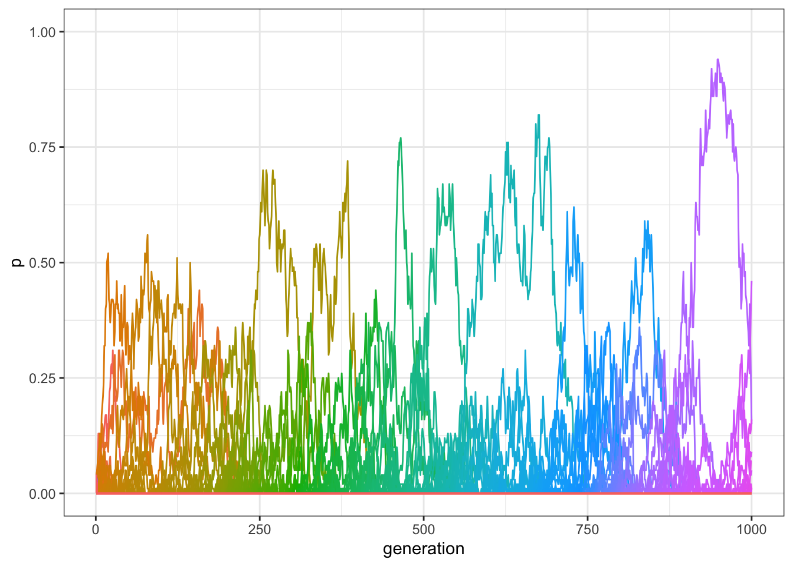
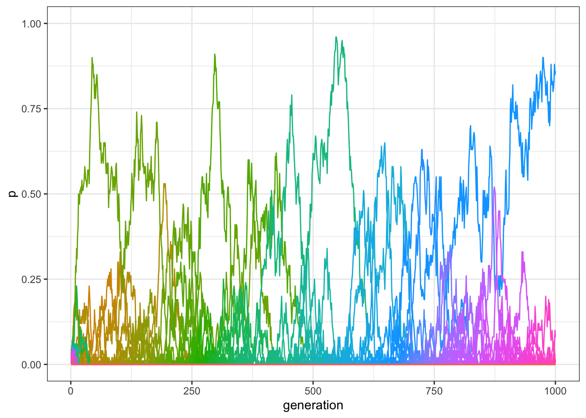
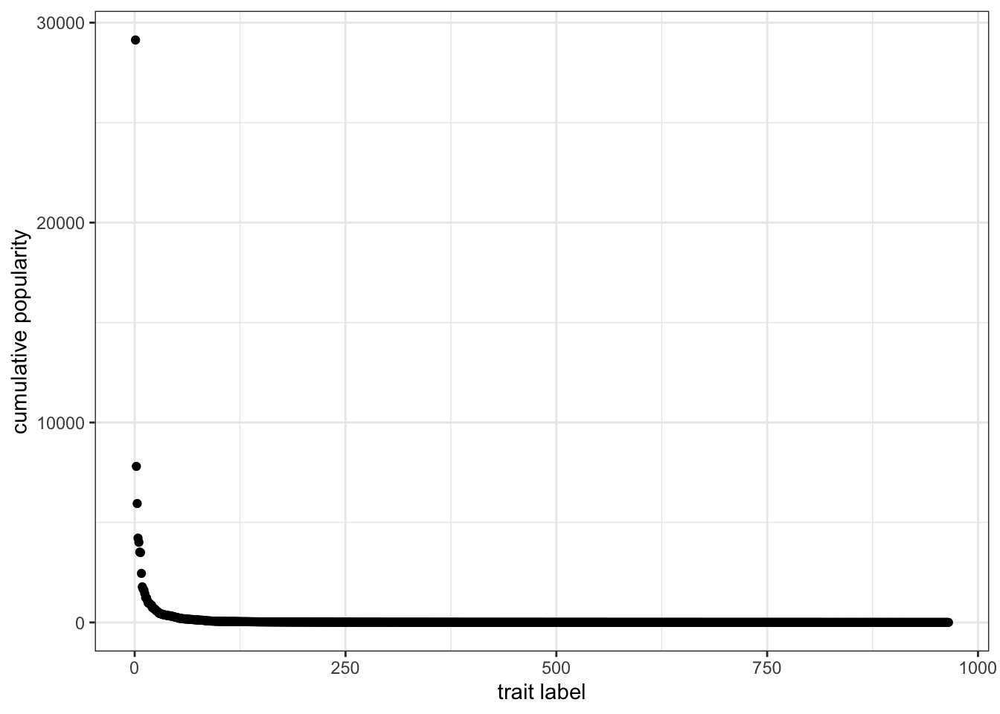
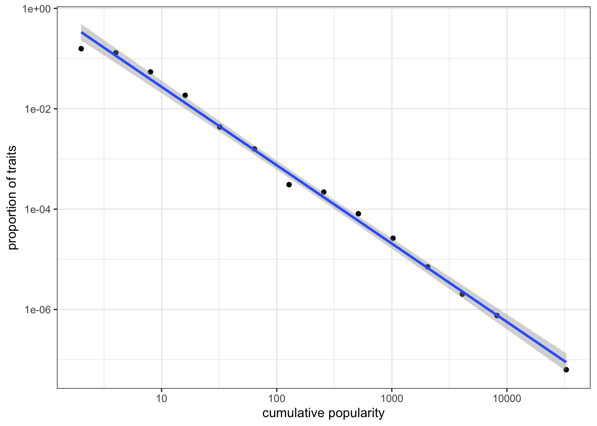

7 Multiple traits models
In all previous models, individuals could possess one of only two cultural traits, \(A\) or \(B\). This is a useful simplification, and it represents cases in which cultural traits can be modeled as binary choices, such as voting Republican or Democrat, driving on the left or the right, or being vegetarian or meat-eating. In other cases, however, there are many options: in many countries there are multiple political parties to vote for, there may be many dietary choices (vegan, pescatarian, vegetarian, etc), and so on. What happens when we copy others’ choices given more than two alternatives? To simplify this question, we again assume unbiased copying as in the first chapter: all traits are functionally equivalent and other individuals are copied at random.
The first modification we need to make in the code concerns how traits are represented. Since we have an undetermined number of possible traits we cannot use the two letters \(A\) and \(B\). Instead we will use numbers, referring to trait “1”, trait “2”, trait “3”, etc. How can we distribute the traits in the initial population? We can assume that there are \(m\) possible traits at the beginning, with \(m \leq N\) (as usual, \(N\) is the population size). In all the following simulations, we will fix \(m=N\), and effectively initialise each individual with a trait randomly chosen between “1” and “100”.
library(tidyverse)
set.seed(111)
N <- 100
population <- tibble(trait = sample(1:N, N, replace = TRUE))You can inspect the population tibble by writing its name.
## # A tibble: 100 x 1
## trait
## <int>
## 1 78
## 2 84
## 3 83
## 4 47
## 5 25
## 6 59
## 7 69
## 8 35
## 9 72
## 10 26
## # … with 90 more rowsThe basic code of the simulation is similar to the code in the first chapter, but what should the output be? Until now, we just needed to save the frequency of one of the two traits, because the frequency of the other was always one minus the first’s frequency. Now we need the frequencies of all \(N\) traits. (Technically, we only need to track \(N-1\) frequencies, with the last inferred by substracting the other frequencies from 1. But for simplicity we’ll track all of the frequencies.)
Second, how do we measure the frequency of the traits in each generation? The base R function tabulate() does this for us. tabulate() counts the number of times each element of a vector (population$trait in our case) occurs in the bins that we also pass to the function. In our case the bins are \(1\) to \(N\). Since we want the frequencies, and not the absolute number, we divide the result by \(N\).
multiple_traits <- function(N, t_max) {
output <- tibble(trait = as.factor(rep(1:N, each = t_max)), generation = rep(1:t_max, N), p = as.numeric(rep(NA, t_max * N)))
population <- tibble(trait = sample(1:N, N, replace = TRUE)) # create first generation
output[output$generation == 1, ]$p <- tabulate(population$trait, nbins = N) / N # add first generation's p for all traits
for (t in 2:t_max) {
previous_population <- population # copy individuals to previous_population tibble
population <- tibble(trait = sample(previous_population$trait, N, replace = TRUE)) # randomly copy from previous generation
output[output$generation == t, ]$p <- tabulate(population$trait, nbins = N) / N # get p for all traits and put it into output slot for this generation t
}
output # export data from function
}Finally, the function to plot the output is similar to what we have already done when plotting multiple runs. The one difference is that now the colored lines do not represent different runs, but different traits, as indicated below by aes(colour = trait). The new line theme(legend.position = "none") simply tells ggplot to not include the legend in the graph, as it is not informative. It would just show 100 colors, one for each trait.
plot_multiple_traits <- function(data_model) {
ggplot(data = data_model, aes(y = p, x = generation)) +
geom_line(aes(colour = trait)) +
ylim(c(0, 1)) +
theme_bw() +
theme(legend.position = "none")
}As usual, we can call the function and see what happens:

Only one trait is still present at the end of the simulation. In general, only one or two traits are still present in the population after 200 generations, and, if we increase \(t_\text{max}\) for example to 1000, virtually all runs end up with only a single trait reaching fixation:

This is similar to what we saw with only two traits, \(A\) and \(B\): with unbiased copying and relatively small populations, drift is a powerful force and quickly erodes cultural diversity.
As we already discussed, increasing \(N\) reduces the effect of drift. You can experiment with various values for \(N\) and \(t_\text{max}\). However, the general point is that variation is gradually lost in all cases. How can we counterbalance the homogenizing effect that drift has in small and isolated population, such as the one we are simulating?
7.1 Introducing innovation
One option is to introduce new traits via innovation. We can imagine that, at each time step, a proportion of individuals, \(\mu\), introduces a new trait in the population. We use the same notation that we used for mutation in chapter 2: you can think that ‘mutation’ is when an individual change its trait for one that is already present, whereas an ‘innovation’ happens when an individual introduces a new trait never seen before. The remaining proportion of individuals, \(1-\mu\), copy at random from others, as before. We can start with a small value, such as \(\mu=0.01\). Since \(N=100\), this means that in each generation, on average, one new trait will be introduced into the population.
The following code adds innovation to the multiple-trait code from above:
mu <- 0.01
last_trait <- max(population) # record the last trait introduced in the population
previous_population <- population # copy the population tibble to previous_population tibble
population <- tibble(trait = sample(previous_population$trait, N, replace = TRUE)) # randomly copy from previous generation
innovators <- sample(c(TRUE, FALSE), N, prob = c(mu, 1 - mu), replace = TRUE) # identify the innovators
if( sum(innovators) > 0){ # if there are innovators
population[innovators,]$trait <- (last_trait + 1):(last_trait + sum(innovators)) # replace innovators' traits with new traits
}There are two modifications here. First, we need to select who are the innovators. For that, we use again the function sample(), biased by \(\mu\), picking \(TRUE\) (corresponding to being an innovator) or \(FALSE\) (keeping the copied cultural trait) \(N\) times.
Second, we need to actually introduce the new traits, with the correct number labels. First we record at the beginning of each generation the label of the last trait introduced (at the beginning, with \(N=100\), it will likely be 100 because we initialise each individual’s traits by choosing randomly between 1 and 100). When new traits are introduced, we give them consecutive number labels: the first new trait will be called 101, the second 102, and so on. The code above adds all of the new traits into the innovator slots all in one go, which is more efficient than doing it one innovator at a time.
We can now, as usual, wrap everything in a function:
multiple_traits_2 <- function(N, t_max, mu) {
max_traits <- N + N * mu * t_max
output <- tibble(trait = as.factor(rep(1:max_traits, each = t_max)), generation = rep(1:t_max, max_traits), p = as.numeric(rep(NA, t_max * max_traits)))
population <- tibble(trait = sample(1:N, N, replace = TRUE)) # create first generation
output[output$generation == 1, ]$p <- tabulate(population$trait, nbins = max_traits) / N # add first generation's p for all traits
for (t in 2:t_max) {
last_trait <- max(population) # record what is the last trait introduced in the population
previous_population <- population # copy individuals to previous_population tibble
population <- tibble(trait = sample(previous_population$trait, N, replace = TRUE)) # randomly copy from previous generation
innovators <- sample(c(TRUE, FALSE), N, prob = c(mu, 1 - mu), replace = TRUE) # select the innovators
if ((last_trait + sum(innovators)) < max_traits) {
if( sum(innovators) > 0){
population[innovators,]$trait <- (last_trait + 1):(last_trait + sum(innovators)) # replace innovators' traits with new traits
}
}
output[output$generation == t, ]$p <- tabulate(population$trait, nbins = max_traits) / N # get p for all traits and put it into output slot for this generation t
}
output # export data
}You should now be familiar with more or less everything within this function, with one exception: the new quantity max_traits. This is a trick we are using to avoid making the code too slow to run. Our output tibble, as you remember, records all the frequencies of all traits. When programming, a good rule-of-thumb is to avoid dynamically modifying the size of your data structures, such as adding new rows to a pre-existing tibble during the simulation. Where possible, set the size of a data structure at the start, and then modify its values during the simulation. So rather than creating a tibble that is expanded dynamically as new traits are introduced via innovation, we create a bigger tibble from the start. How big should it be? We do not know for sure, but a good estimate is that we will need space for the initial traits (\(N\)), plus around \(N\mu\) traits that are added each generation.
To be absolutely sure we do not exceed this estimate, we wrap the innovation instruction within the if ((last_trait + sum(innovators)) < max_traits) condition. This prevents innovation when the tibble has filled up. This might prevent innovation in the last few generations, but generally this should hae negligible consequences for our purposes.
Let’s now run the function with an innovation rate \(\mu=0.01\), a population of 100 individuals, and for 200 generations.

With innovation, there should now be more traits at non-zero frequency at the end of the simulation than when innovation was not possible. We can check the exact number, by inspecting how many frequencies are higher than 0 in the last row of our matrix:
## [1] 14What happens if we increase the number of generations, or time steps, to 1000, as we did before?

As you can see in the plot, there should still be several traits that have frequencies higher than 0, even after 1000 generations. Again, we can find the exact number in the final generation:
## [1] 9Innovation, in sum, allows the maintenance of variation even in small populations.
7.2 Optimising the code
Now for a short technical digression. You may have noticed that running the function multiple_traits_2() is quite time consuming with a population of 1000 individuals. There is a quick way to check the exact time needed, using the function Sys.time(). This returns the current time at the point of its execution. Let’s run the function again and calculate how long it takes.
start_time <- Sys.time()
data_model <- multiple_traits_2(N = 100, t_max = 1000, mu = 0.01)
end_time <- Sys.time()
end_time - start_time## Time difference of 24.20733 secsOn a typical laptop, it may take more than 30 or 40 seconds. To store the output, we are using a tibble with \(1100000\) data points, as max_traits is equal to \(1100\), which needs to be updated in each of the \(1000\) generations. One way of speeding up the simulation is to record our output in a different data structure.
So far, we have been using tibbles to store our simulation output. R, as with all programming languages, can store data in different structures. Depending on what the data are and what one wants to do with them, different structures are more or less suitable. The advantage of tibbles is that they can contain heterogeneous data, depending on what we need to store: for example, in our output tibble, the \(trait\) column was specified as a factor, whereas the others two columns, \(generation\) and \(p\), were numeric.
An alternative is to use vectors and matrices. A vector is a list of data points that are all of the same type, e.g. logical (TRUE/FALSE), integer (whole numbers), numeric (any numbers), or character (text). Matrices are just two-dimensional vectors: they must also contain all the same type of data, but they have rows and columns similar to a tibble, dataframe or Excel spreadsheet. The advantage of vectors and matrices is efficiency: they make simulations much faster than identical code running with tibbles.
Let’s rewrite our multiple trait function that runs exactly the same simulation, but using matrices instead of tibbles. The output is now a matrix with \(t_\text{max}\) rows and max_traits columns. This is initialised with NAs at the beginning. The population is a vector of integers, representing the trait held by each individual.
multiple_traits_matrix <- function(N, t_max, mu) {
max_traits <- N + N * mu * t_max
output <- matrix(data = NA, nrow = t_max, ncol = max_traits)
# create first generation
population <- sample(1:N, N, replace = TRUE)
output[1, ] <- tabulate(population, nbins = N) / N
# add first generation's p for all traits
for (t in 2:t_max) {
last_trait <- max(population) # record what is the last trait introduced in the population
previous_population <- population # copy individuals to previous_population tibble
population <- sample(previous_population, N, replace = TRUE)
# randomly copy from previous generation
innovators <- sample(c(TRUE, FALSE), N, prob = c(mu, 1 - mu), replace = TRUE) # select the innovators
if ((last_trait + sum(innovators)) < max_traits) {
population[innovators] <- (last_trait + 1):(last_trait + sum(innovators)) # replace innovators' traits with new traits
}
output[t, ] <- tabulate(population, nbins = max_traits) / N # get p for all traits and put it into output slot for this generation t
}
output # export data
}To plot the output, we re-convert it into a tibble so that it can be handled by ggplot(). We first create a column that explicitly indicates the number of generations, and then we use the function gather() from the tidyverse to reassemble the columns of the matrix in key-value pairs.
plot_multiple_traits_matrix <- function(data_model) {
generation <- rep(1:dim(data_model)[1], dim(data_model)[2])
data_to_plot <- as_tibble(data_model) %>%
gather( key = "trait", value = "p") %>%
add_column(generation)
ggplot(data = data_to_plot, aes(y = p, x = generation)) +
geom_line(aes(colour = trait)) +
ylim(c(0, 1)) +
theme_bw() +
theme(legend.position = "none")
}We can now run the new function, checking that it gives the same output as the tibble version, and again calculating the time needed.
start_time <- Sys.time()
data_model <- multiple_traits_matrix(N = 100, t_max = 1000, mu = 0.01)
end_time <- Sys.time()
plot_multiple_traits_matrix(data_model)
## Time difference of 0.04829717 secsThe results are equivalent, but the simulation is almost 100 times faster! This shows that implementation details are very important when building individual based models. When one needs to run the same simulation many times, or test many different parameter values, implementation choices can make drastic differences.
7.3 The distribution of popularity
An interesting aspect of these simulations is that, even if all traits are functionally equivalent and transmission is unbiased, a few traits, for random reasons, are more successful than the others. A way to visualise this is to plot their cumulative popularity, i.e. the sum of their quantities over all generations. Given our matrix, it is easy to calculate this by summing each column and multiplying by N (remember they are frequencies, whereas now we want to visualise their actual quantities). We also need to keep only the values that are higher than zero: values equal to zero are in fact the empty slots created in the initial matrix that were never filled wiht actual traits.
Let’s sort them from the most to the least popular and plot the results.
data_to_plot <- tibble(cumulative = sort(cumulative, decreasing = TRUE))
ggplot(data = data_to_plot, aes(x = seq_along(cumulative), y = cumulative)) +
geom_point() +
theme_bw() +
labs(x = "trait label", y = "cumulative popularity")
This is an example of a long-tailed distribution. The great majority of traits did not spread in the population, and their cumulative popularity is very close to one. Very few of them—the ones on the left side of the plot—were instead very successful. Long-tailed distributions like the one we just produced are very common for cultural traits: a small number of movies, books, or first names are very popular, while the great majority is not. In addition, in these domains, the popular traits are much more popular than the unpopular ones. The average cumulative popularity is mean(cumulative), but the most successful trait has a popularity of max(cumulative).
It is common to plot these distributions by binning the data in intervals of exponentially increasing size. In other words, we want to know how many traits have a cumulative popularity between 1 and 2, then between 2 and 4, then between 4 and 8, and so on, until we reach the maximum value of cumulative popularity. The code below does that, using a for cycle to find how many traits fall in each bin and further normalising according to bin size. The size is increased 50 times, until an arbitrary maximum bin size of \(2^{50}\), to be sure to include all cumulative popularities.
bin <- rep(NA, 50)
x <- rep(NA, 50)
for( i in 1:50 ){
bin[i] <- sum( cumulative >= 2^(i-1) & cumulative < 2^i)
bin[i] <- ( bin[i] / length( cumulative ) ) / 2^(i-1);
x[i] <- 2^i
}We can now visualise the data on a log-log plot, after filtering out the empty bins. A log-log plot is a graph that uses logarithmic scales on both axes. Using logarithmic axes is useful when, as in this case, the data are skewed towards large values. In the previous plot, we were not able to appreciate visually any difference in the great majority of data points, for example points that had cumulative popularity between 1 and 10, as they were all bunched up close to the x-axis.
data_to_plot <- tibble(bin = bin, x = x)
data_to_plot <- filter(data_to_plot, bin > 0)
ggplot(data = data_to_plot, aes(x = x, y = bin)) +
geom_point() +
labs(x = "cumulative popularity", y = "proportion of traits") +
scale_x_log10() +
scale_y_log10() +
stat_smooth(method = "lm") +
theme_bw()## `geom_smooth()` using formula 'y ~ x'
On a log-log scale, the distribution of cumulative popularity produced by unbiased copying lies approximately on a straight line (this linear best-fit line is produced using the command stat_smooth(method = "lm")). This straight line on a log-log plot is known as a “power law” frequency distribution. The goodness of fit and the slope of the line can be used to compare different types of cultural transmission. For example, what would happen to the above power law if we added some degree of conformity? What about demonstrator-based bias? We can also generate equivalent plots for real-world cultural datasets to test hypotheses about the processes that generated these distributions in the real world.
7.4 Summary of the model
In this chapter we simulated the case where individuals can possess one of more than two traits. We explored the simplest case of unbiased transmission. We also implemented the possibility of innovation, where individuals introduce, with some probability, new traits into the cultural pool of the population. Individual innovations counterbalance the homogenizing effect of drift, and replace the traits that are gradually lost.
To simulate multiple traits and innovation we also needed to deal with a few technical details such as how to keep track of an initially unknown number of new traits. We learned that it is best to create data structures of the desired size at the outset, rather than changing their size dynamically during the simulation. We also saw the importance of using appropriate data structures when simulations start to become more complex. Replacing tibbles with matrices, we were able to make our simulation 100 times faster.
Our results showed that unbiased copying produces long-tailed distributions where very few traits are very popular and the great majority are not. An interesting insight from this model is that these extreme distributions do not necessarily result from extreme tendencies at the individual level. Some traits become hugely more popular than others without individuals being biased, for example, towards popular traits. Cultural transmission generates these distributions without biases, but simply because popular traits have the intrinsic advantage of being more likely to be randomly copied. We also introduced a new technique, the log-log plot of binned popularity distributions, to visualise this outcome.
7.5 Analytical appendix
ANYHTING TO DO HERE?
7.6 Further readings
Neiman (1995) first introduced a model of unbiased copying with multiple traits to explain popularity distributions in assemblages of Neolithic pottery. Bentley, Hahn, and Shennan (2004) elaborated on this idea, presenting a ‘random copying’ model (equivalent to the one developed in this chapter) and comparing the popularity distributions produced with real datasets, including the frequency distributions of first names in the US and the citations of patents. Mesoudi and Lycett (2009) explored how adding transmission biases (e.g. conformity) to the basic model changes the resulting power-law frequency distribution.
References
Bentley, R. Alexander, Matthew W. Hahn, and Stephen J. Shennan. 2004. “Random Drift and Culture Change.” Proceedings of the Royal Society of London. Series B: Biological Sciences 271 (1547): 1443–50. https://doi.org/10.1098/rspb.2004.2746.
Mesoudi, Alex, and Stephen J. Lycett. 2009. “Random Copying, Frequency-Dependent Copying and Culture Change.” Evolution and Human Behavior 30 (1): 41–48. https://doi.org/10.1016/j.evolhumbehav.2008.07.005.
Neiman, Fraser D. 1995. “Stylistic Variation in Evolutionary Perspective: Inferences from Decorative Diversity and Interassemblage Distance in Illinois Woodland Ceramic Assemblages.” American Antiquity 60 (1): 7–36. https://doi.org/10.2307/282074.